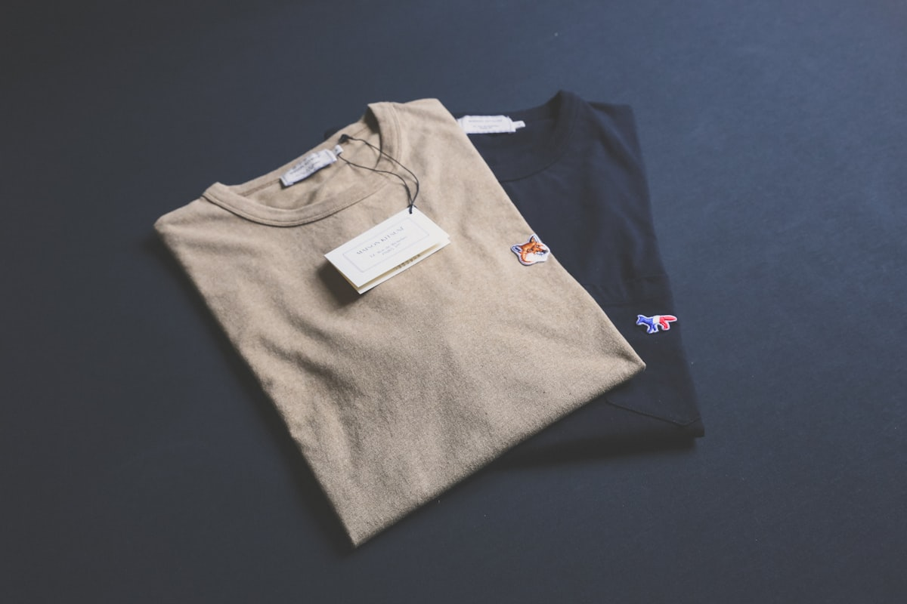

Short answer: Trade show giveaways get kept when they are useful on their own, not when they are cute. Pick an item people would carry anyway, put the logo where it reads from a distance, order enough for the floor plus a buffer, and tie the handout to a reason to share contact details. A tote, a good pen, or a phone pouch beats a gadget nobody charges.
Bottom line: Order for expected footfall plus 20 percent, keep the logo on one side, and ask for the scan or email at the moment you hand the item over.
Useful beats cute every time
The booth down the hall always has the flashing gadget, and it always ends up in a drawer by the second session. The items attendees keep solve a problem they have that week: carrying swag, charging a phone, or writing something down. Usefulness is what carries your name past the convention center and into a real routine, which is the only place a logo does any work.
Cute only wins if it is also useful. A tiny puzzle cube is cute and useless; a tote is plain and useful, and it wins. When you are deciding between two ideas, ask whether you would grab it on your way out of a show yourself. If the honest answer is no, the attendee will leave it on the table too.
Where the print should sit
Placement decides whether the item advertises you or just exists. A logo on the front face of a tote, or across the chest of a tee, reads from a few feet away on a crowded floor. A logo crammed into a corner with fine print underneath looks like an ad and lowers the odds the person wears or carries it in public.
Keep one side clean for a web address or a short line, and resist the urge to cover every inch. The back of a tee or the inside of a bag is dead space for a logo but fine for a longer message. The goal is recognition at a glance, not a brochure printed on fabric that nobody reads past the first line.
Keep the print honest about what the item is. A pen that hides the logo under the clip wastes the only flat space it has, and a tote with the mark on the bottom corner gets seen only when it is empty. Put the identifying mark where the eye lands first: the broad face of the bag, the chest of the tee, the barrel of the pen. Spend the print budget on the spot that travels, not the spot that stays hidden in a drawer. The item that shows your name on the way to the car does more than the one that shows it only in the office.
Quantity math for the floor
Start with the footfall you expect at your booth, not the headcount of the whole event. If your location and topic usually draw four hundred real conversations, plan for four hundred handouts and add a buffer for the last-hour rush and staff who need samples. Running out before closing looks worse than a small surplus you carry to the next show.
For a single item, volume is your friend on price, and the bulk order page handles the count and the deadline in one cart. If you split across two items, order each to its own expected take rate rather than half the total twice, because one always outsells the other and you end up short on the popular one.
| Giveaway | Cost per unit | Keepsake factor |
|---|---|---|
| Cotton tote bag | $3 to $6 | High, used weekly for groceries |
| Printed T-shirt | $8 to $14 | Medium, worn if the fit is right |
| Branded pen | $1 to $2 | Medium, kept until lost |
| Phone pouch or sock | $4 to $7 | Medium-high, used daily |
| Novelty gadget | $10 to $20 | Low, drawer-bound in a week |
Tie the giveaway to lead capture
The item is the thank-you, not a free-for-all. Hand it over in exchange for a scan, a business card, or a quick form on a tablet, so you trade value for a real contact instead of spraying swag at everyone who walks by. A small extra, like a draw entry, can pull a fuller profile from your best leads while you still collect the rest.
Capture the detail at the moment you hand the item over, because attendees forget by the time they reach the lobby. A simple scan app or a one-field form keeps the line moving, and the gift makes the ask feel fair. The trade show merch guide covers the broader floor plan if you are building the whole booth around the handout.
Items that actually survive the booth
Some items earn their place year after year because they solve a problem the attendee has that same day. A tote carries the rest of the swag they collect, a tee in the right size gets worn on the floor, and a phone pouch or tech sock earns a spot in a daily bag. These are the pieces worth stocking in volume.
Reusable bottles work at events where people walk all day, and pens and notebooks outlast the conference itself. The common thread is repetition: the more often the item is used, the more often your name shows up. Skip anything that needs charging or assembly, because the moment it becomes effort, it becomes clutter.
- Tote bags, because attendees need something to carry the rest of their swag
- T-shirts in a few sizes, since a good fit gets worn in public
- Phone pouches and tech socks that solve a small daily problem
- Reusable bottles for events where people walk all day
- Pens and notebooks that outlast the conference itself
What to avoid
Skip the novelty gadget unless it is genuinely useful, because most are drawer-bound within a week and they cost more per unit than a tote that gets seen daily. Also avoid tiny logos on busy patterns, which read as nothing from two feet away and waste the print. The cheapest item with the clearest logo usually outworks the expensive one nobody notices.
Do not over-order a single odd size or color and hope it moves, because leftover swag from last year is the quiet tax on every event. Order the proven items, keep the art simple, and let the bulk order page track the count. A tight, useful set of giveaways beats a shelf of clever things nobody kept.
Budgeting the whole swag line
One booth is one line item, but most teams run several events a year, and the swag budget should be planned across all of them rather than rebuilt each time. Set a per-event cap, decide which shows get the tote and which get the pen, and keep a standing order of the proven items so you are never rushing a print two days before the floor opens. A planned line costs less than a panic order placed under a deadline.
Track what comes back unsold. The items left in the bin after a show tell you more than the items that left, because surplus is the clearest signal you over-ordered or picked wrong. Write down the take rate per item at each event, and let that number drive the next order instead of habit. The trade show merch guide frames this as part of the wider floor strategy if you want the full picture before you commit the spend.
Keep a small slush fund for the show that matters most, because the flagship event deserves the better item while the small local booth can run on pens. Spreading the budget evenly across events of different size wastes the money where it counts least. Tie the bigger spend to the booth with the most footfall, and save the novelty for nowhere, because the data from past shows says it does not travel home with anyone.
Report the cost per qualified lead back to the team that owns the budget, because a tote that costs four dollars and earns one scanned contact is cheaper than a gadget that costs fifteen and earns none. The number reframes swag from a cost center to a channel, and it is the only way to defend the line next year. Use the custom T-shirts page and the bulk order page to keep the unit cost honest as volumes change.
Frequently Asked Questions
What trade show giveaway do people actually keep?
Useful items win. A cotton tote, a decent pen, or a phone pouch gets used after the show, while a novelty gadget usually lands in a drawer. The item should solve a small problem the attendee has that week, like carrying swag or charging a phone. If you would use it yourself, it has a real chance of staying in someone's bag past the event.
How many giveaways should I order for a trade show?
Estimate your booth footfall, then add about 20 percent for the last-hour rush and staff. If you expect 400 meaningful conversations, order 480 units. Running out before closing looks worse than a small surplus you can use at the next event. For a single SKU, the bulk order page handles the volume and the deadline in one cart.
Where should the logo go on a giveaway?
One side, large enough to read from a few feet. A tote or tee prints best with the logo on the front or the broad face, not a tiny corner. Keep the back clear for a web address or a short line. Crowding the item with fine print makes it look like an ad and lowers the chance it gets used in public where the name travels.
How do giveaways help capture leads?
Hand the item over in exchange for a scan, a business card, or a quick form on a tablet. The gift is the thank-you, not a free-for-all, so you trade value for a real contact. Tie a small extra, like a draw entry, to a fuller profile so the best leads self-select while you still collect the rest of the floor.
Are custom T-shirts good trade show swag?
They can be, if you stock a few sizes and the design is one people will wear. A plain logo shirt often stays in a drawer, but a good color and fit gets seen around the event and after. Order through the custom T-shirts page and keep the print on the front so it reads across a crowded hall rather than on a hidden seam.